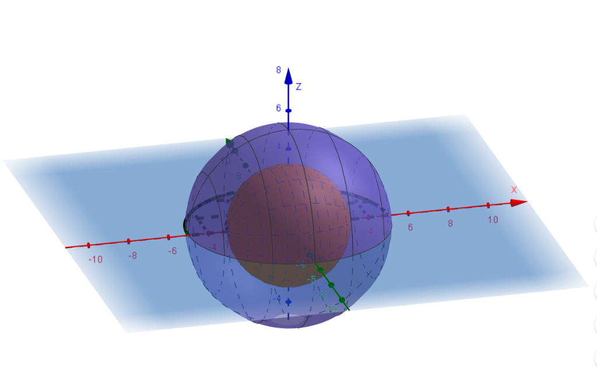
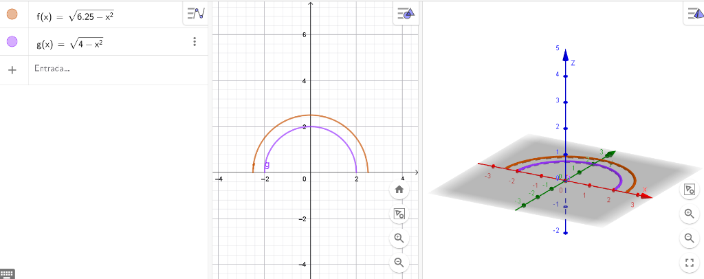

UNIVERSIDADE FEDERAL DE PELOTAS
Instituto de Física e Matemática • CLMD / UAB
Curso de Licenciatura em Matemática a Distância
Casca de Esfera
Região delimitada por duas esferas concêntricas — do semicírculo no $\mathbb{R}^2$ à revolução no $\mathbb{R}^3$, integral e aplicações.
Do Círculo à Casca Esférica
Base Geométrica: Círculo e Rotação
1. Círculo e semicírculo ($\mathbb{R}^2$) $\to$ 2. Rotação $360^\circ$ gerando a esfera ($\mathbb{R}^3$).
Dedução: Esfera $\to$ Casca Esférica
3. Volume da esfera ($\frac{4}{3}\pi R^3$) $\to$ 4. Construção da casca ($R, r$ + GeoGebra) $\to$ 5. Volume $\frac{4}{3}\pi(R^3-r^3)$.
Aplicação Matemática (ENEM PPL 2023)
Bola de chocolate oca ($R=10\text{ cm}, e=1\text{ cm}$), volume em $\text{cm}^3$/SI e massa.
Aplicação Contextualizada Inédita
Reservatório esférico de concreto ($R=2{,}5\text{ m}, r=2{,}0\text{ m}$), GeoGebra, integral e limitações.
Conclusão e Encerramento
Síntese do caminho contínuo, ligação Geometria $\leftrightarrow$ Cálculo e arguição da banca.
1. Círculo, Semicírculo e Propriedades ($\mathbb{R}^2$)
Do Triângulo Retângulo ao Círculo ($x^2 + y^2 = R^2$)
- Pitágoras no plano: todo ponto $(x,y)$ à distância $R$ de $C(0,0)$ forma um triângulo retângulo de catetos $x, y$ e hipotenusa $R$, logo $x^2 + y^2 = R^2$.
- Por que isolar $y \ge 0$? A circunferência completa não é uma função (cada $x$ tem 2 imagens: $\pm\sqrt{R^2-x^2}$). Escolhendo o arco superior ($y \ge 0$), surge a função:
Por Que Só a Metade Superior em Função de $x$?
- Giro de $360^\circ$ sem duplicar: girar apenas o gráfico de $f(x)$ em torno do eixo $x$ já varre toda a esfera, fazendo a altura $f(x)$ virar o raio de cada fatia.
2. Rotação $360^\circ$ do Semicírculo: Surge a Esfera
Rotação $360^\circ$ + Fatia em Forma de "Moeda"
- Nasce a esfera em $\mathbb{R}^3$: girando o gráfico de $f(x)$ em torno do eixo $x$, formamos a esfera sólida de raio $R$.
- A ideia da moeda (cilindro fino): cada fatia vertical de espessura mínima $\Delta x$ funciona como uma moeda de raio $f(x)$ e altura $\Delta x$ — volume $\pi \cdot \text{raio}^2 \cdot \text{altura}$.
Como Somar Infinitas Moedas? (Ligação com a Parte 2)
- Já temos o volume aproximado de uma fatia: $\Delta V \approx \pi[f(x)]^2 \Delta x$.
- Próximo passo (Slides 3 e 4): substituir $f(x)$ para cancelar a raiz, somar todas as fatias de $-R$ até $R$ e deduzir $V_{\text{esfera}} = \frac{4}{3}\pi R^3$!
3. Volume da Esfera: Riemann e Seções Transversais
Substituir $f(x)$, Cancelar a Raiz e Somar os Discos
- Cancelando a raiz: substituindo $f(x)=\sqrt{R^2-x^2}$ na moeda, o quadrado elimina a raiz: $\Delta V \approx \pi(\sqrt{R^2-x^2})^2\Delta x = \pi(R^2-x^2)\Delta x$.
- Riemann $\to$ Integral: somando as $n$ fatias com $\Delta x \to 0$ e tirando a constante $\pi$ da integral:
Por Que Método dos Discos (e NÃO Cascas Cilíndricas)?
- Vantagem decisiva: como $\pi[f(x)]^2$ eleva ao quadrado, $\sqrt{R^2-x^2}$ some antes mesmo de integrar.
- Por que não Cascas? Girando no eixo $x$, exigiria integrar $2\pi y\sqrt{R^2-y^2}\,dy$, mantendo a raiz quadrada!
4. Dedução do Volume da Esfera ($V_{\text{esfera}} = \frac{4}{3}\pi R^3$)
Teorema Fundamental: $\pi\left[P(R) - P(-R)\right]$
5. Casca Esférica: Duas Esferas Concêntricas ($\mathbb{R}^3$)
Relacionando Duas Esferas Concêntricas no $\mathbb{R}^3$
- Como nasce a casca: partimos da esfera externa de raio $R$ (volume já deduzido no Slide 4!) e retiramos do centro $C(0,0,0)$ um miolo vazio de raio $r$.
- Propriedades e simetria: resta a parede de espessura $e = R - r$ (ex.: $5 - 3 = 2$) com simetria esférica total $O(3)$.
Ponte Para o Volume da Casca (Etapa 5 no Slide 8)
- Exemplos reais: casca de laranja, bola oca ou reservatório esférico. No Slide 6 vamos girar essa faixa no 3D e validar no GeoGebra (Slide 7)!
6. Região Geradora $\mathcal{R}$ e Revolução $360^\circ$ ($R=5,\; r=3$)
Duas Curvas Geradoras no Plano $\mathbb{R}^2$
- Curva externa ($R=5$): $f(x) = \sqrt{R^2 - x^2}$ no intervalo $[-R, R]$ ($[-5, 5]$).
- Curva interna ($r=3$): $g(x) = \sqrt{r^2 - x^2}$ no intervalo $[-r, r]$ ($[-3, 3]$).
Revolução $360^\circ$ da Faixa $\mathcal{R}$ no Eixo $x$
- Faixa sólida $\mathcal{R}$: é a parede azul plana entre os arcos $r=3$ e $R=5$, com espessura $e = 2$.
- Giro $360^\circ$: ao rotacionar apenas $\mathcal{R}$ no eixo $x$, constrói-se a casca esférica em 3D preservando a cavidade oca!
7. Modelagem da Casca no GeoGebra ($R = 5,\; r = 3$)
Região Geradora $\mathcal{R}$ no Plano Cartesiano ($\mathbb{R}^2$)

Sólido de Revolução ($360^\circ$ no Eixo $x$ $\to$ $\mathbb{R}^3$)

8. Dedução do Volume da Casca ($V_{\text{ext}} - V_{\text{int}}$)
Relacionando os Volumes Externo ($R$) e Interno ($r$)
- Pelo resultado do Slide 4: $V_{\text{ext}} = \frac{4}{3}\pi R^3$ e $V_{\text{int}} = \frac{4}{3}\pi r^3$, logo $V_{\text{casca}} = V_{\text{ext}} - V_{\text{int}} = \frac{4}{3}\pi R^3 - \frac{4}{3}\pi r^3$.
Exemplo do Modelo ($R=5,\; r=3$) e Ponte Para as Aplicações
- Interpretação geométrica: mede apenas a parede sólida (espessura $e = 2$) entre fora e dentro.
- Próximo passo (Etapa 6): fórmula pronta! Aplicamos agora na Bola de Chocolate (ENEM) e no Reservatório.
9. Problema 1: Bola de Chocolate Oca
Enunciado & Referência Oficial
"Uma empresa produziu uma bola de chocolate, em formato esférico, para utilizar na decoração de sua loja. Essa bola tem $20\text{ cm}$ de diâmetro externo, sendo oca por dentro, e a espessura entre as superfícies interna e externa corresponde a $1\text{ cm}$. Na confecção dessa bola, $1\text{ g}$ equivale a $0{,}75\text{ cm}^3$. Qual a quantidade de chocolate, em grama?"
- Referência: INEP — Exame Nacional do Ensino Médio (ENEM PPL 2023), Prova de Matemática, Questão 159 (Caderno Azul).
Extração dos Raios ($R$ e $r$) e Aplicação da Parte 2
- Raio externo ($R$): como o diâmetro é $2R = 20\text{ cm}$, dividimos por $2$: $R = 10\text{ cm}$.
- Raio interno ($r$): pela definição $e = R - r$, descontamos $1\text{ cm}$ de casca: $r = 10 - 1 = 9\text{ cm}$.
- Fórmula deduzida no Slide 8: $V = \frac{4}{3}\pi (R^3 - r^3)$.
10. Resolução: Volume, Unidades SI e Massa
1. Volume da Casca Passo a Passo ($\text{cm}^3$ e SI)
2. Massa via Razão de Densidade ($1\text{ g} = 0{,}75\text{ cm}^3 = \frac{3}{4}\text{ cm}^3$)
- Conversão SI: como $1\text{ m} = 100\text{ cm}$, então $1\text{ m}^3 = 100^3 = 10^6\text{ cm}^3$.
11. Problema 2: Reservatório Esférico de Água
Contextualização & Enunciado (Problema Autoral)
Para armazenar água de irrigação em uma propriedade rural, projeta-se um reservatório esférico de concreto armado — formato escolhido por exigir menor área externa para o mesmo volume e distribuir uniformemente a pressão da água. Com raio interno $r = 2{,}0\text{ m}$ e parede de espessura $e = 0{,}5\text{ m}$ (raio externo $R = 2{,}5\text{ m}$), calcule por integral definida o volume de concreto ($V_{\text{concreto}}$) necessário para construir essa casca esférica.
Preparação do Modelo (Raios e Curvas Geradoras)
- Raios e espessura: $r = 2{,}0\text{ m}$, $R = 2{,}5\text{ m}$ e $e = R - r = 0{,}5\text{ m}$.
- Curvas geradoras: $f(x)=\sqrt{6{,}25-x^2}$ ($R^2 = 2{,}5^2$) e $g(x)=\sqrt{4-x^2}$ ($r^2 = 2{,}0^2$).
- Roteiro da integral: $V_{\text{concreto}} = \pi\int_{-R}^{R}[f(x)]^2\,dx - \pi\int_{-r}^{r}[g(x)]^2\,dx$.
12. Modelagem no GeoGebra: Curvas 2D, Seção e 3D
Curvas $f(x)=\sqrt{6{,}25-x^2}$ e $g(x)=\sqrt{4-x^2}$ ($y \ge 0$)

Faixa $a:\; 4 \le x^2+y^2 \le 6{,}25$ e Meia-Revolução

Superfícies Paramétricas ($u \in [-R,R],\; v \in [0, 2\pi]$)

Câmara Interna ($r=2{,}0\text{ m}$) e Parede ($e=0{,}5\text{ m}$)

13. Volume de Concreto via Integral Definida
Cadeia Integral Completa ($[-2{,}5;\; 2{,}5]$ e $[-2{,}0;\; 2{,}0]$)
Resultado Final: Volume de Concreto ($V_{\text{concreto}}$)
14. Viabilidade Prática e Limitações do Modelo
1. Escala da Obra e Apoio Estrutural
- Volume de concreto: os $31{,}94\text{ m}^3$ obtidos na integral equivalem a cerca de 4 caminhões-betoneira padrão ($8\text{ m}^3$).
- Fundação no solo: a casca espessa ($e = 0{,}5\text{ m}$) combinada a $33.510\text{ L}$ de água exige base de apoio estrutural reforçada.
2. Limitações do Modelo Ideal da Integral
- A integral assume uma casca contínua e totalmente fechada sem aberturas.
- Na engenharia real, há tampa de inspeção no topo e canos de entrada/saída perfurando a casca — reduzindo ligeiramente o volume real de concreto.
Considerações Finais
Sequência contínua: Círculo $\to$ Rotação $\to$ Esfera $\to$ Casca $\to$ Volume da Casca $\to$ Aplicações.
Construção Contínua
Círculo ($\mathbb{R}^2$) $\to$ Esfera ($\frac{4}{3}\pi R^3$) $\to$ Casca concêntrica $\to$ $V_{\text{ext}} - V_{\text{int}}$.
Fórmula Validada
$V = \frac{4}{3}\pi(R^3-r^3)$ confirmada e aplicada no ENEM PPL 2023 e no reservatório.
Olhar Crítico
Unidades SI, justificativa de cada ferramenta e limitações reais da engenharia.